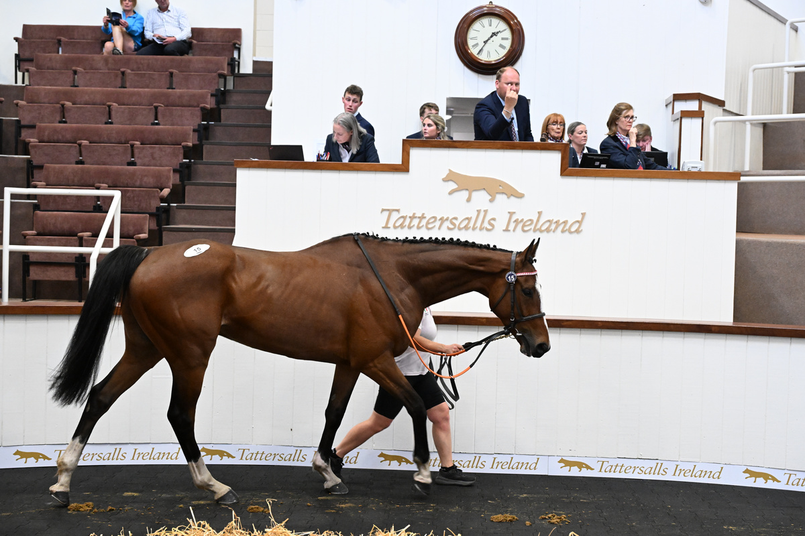

Dan De Champ alcanza un récord de 210.000 euros en la subasta de Tattersalls Ireland
El hijo de Old Persian, ganador en su debut en Ballindenisk el pasado 17 de mayo, fue adquirido por Tom Morgan en nombre de CDL Racing en la subasta de mayo de punto a punto e Horses-in-Training.

Foto: pbs.twimg.com
Dan De Champ, hijo del semental Old Persian, se convirtió el jueves en el ejemplar más cotizado de la subasta de mayo de Tattersalls Ireland dedicada a punto a punto e Horses-in-Training tras alcanzar los 210.000 euros. El potro de cuatro años, presentado por Redbridge Stables, había debutado con victoria en Ballindenisk apenas dos semanas antes, el 17 de mayo, lo que disparó el interés de varios compradores.
Tom Morgan, actuando en representación de Damian Tiernan y su operación CDL Racing, se hizo con el ejemplar tras una puja que marcó un nuevo récord para la cita. La subasta, celebrada en las instalaciones de Tattersalls Ireland, registró así una cifra máxima que supera las marcas anteriores del certamen dedicado a caballos de carreras campestres y en activo.
Dan De Champ iniciará ahora una nueva etapa bajo la tutela de CDL Racing, cuadra que apuesta por un ejemplar que ha demostrado condiciones desde su primera salida. La victoria en su debut, sumada a su pedigrí como hijo de Old Persian, justificaron el precio final alcanzado en una jornada que consolida el tirón comercial de la subasta de mayo de Tattersalls Ireland.
— Redacción de Galope al Día